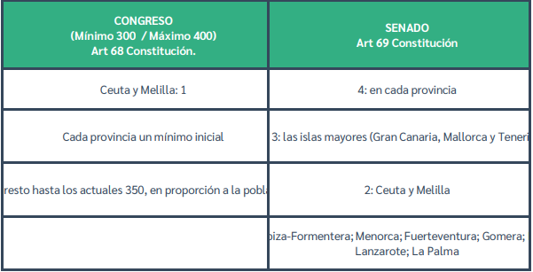

CONGRESO DE LOS DIPUTADOS
El Congreso de los Diputados conforma, junto al Senado, las Cortes Generales de España, que ejercen el poder legislativo del Estado y representan al pueblo español. En la actualidad se compone de 350 diputados elegidos por
sufragio universal cada cuatro años o antes en el caso de disolución de la Cámara. El Congreso de los Diputados, también conocido como Cámara Baja, se rige por lo establecido en la Constitución y en su propio reglamento.
Composición del congreso de los diputados
La Constitución de 1978 establece que el Congreso de los Diputados se compone de un mínimo de 300 y un máximo de 400 diputados elegidos por sufragio universal, libre, igual, directo y secreto.
A cada provincia le corresponde un mínimo inicial de dos diputados. Las ciudades autónomas de Ceuta y Melilla eligen un diputado cada una. Los doscientos cuarenta y ocho diputados restantes se distribuyen entre las provincias
en proporción a su población.
Nadie puede ser miembro de las dos cámaras simultáneamente, es decir, un diputado no puede ser a la vez senador. Lo que sí cabe es ser senador de las Cortes Generales y miembro de la Asamblea de una Comunidad Autónoma.
El Congreso es elegido por cuatro años. El mandato de los diputados termina cuatro años después de su elección o el día de la disolución de la Cámara.
Convocatoria y Constitución del Congreso
El Congreso electo se convoca dentro de los veinticinco días siguientes a la celebración de las elecciones generales.
Organización del Congreso
El Congreso de los Diputados funciona en pleno y por comisiones. El pleno es el órgano supremo de decisión, pero según establece el artículo 75 de la Constitución, puede delegar en las comisiones legislativas permanentes
la aprobación de proyectos o proposiciones de ley.
El Pleno del Congreso está formado por la totalidad de los miembros de la Cámara.
Además de Pleno, la Cámara cuenta con diversos órganos que pueden agruparse en dos categorías:
- Órganos de dirección o gobierno: Ordenan, impulsan y dirigen la vida del Congreso. Son: La presidencia, La Mesa, La Junta de Portavoces.
-
Órganos de trabajo: La Diputación Permanente (presidida por el presidente del Congreso y compuesta por un mínimo de veintiún miembros pertenecientes a los Grupos Parlamentarios de forma proporcional a su
representación en el Congreso. Vela por los poderes de la Cámara entre los periodos de sesiones y cuando ha sido disuelta o ha expirado su mandato), Comisiones (Son los órganos de trabajo que preparan las decisiones
del Pleno o que le sustituyen en determinados casos. Conocen de los proyectos, proposiciones o asuntos que les encomiende la Mesa del Congreso, de acuerdo con su competencia. Están integradas por los miembros que
designen los Grupos Parlamentarios en el número que indique la Mesa del Congreso, oída la Junta de Portavoces, en proporción a su importancia numérica. Pueden ser permanentes legislativas, permanentes no legislativas
y no permanentes, entre las que destacan las comisiones de investigación).
Funcionamiento
Se reúne dentro de los dos períodos de sesiones que establece la Constitución en cada año natural: el primero de febrero a junio y el segundo de septiembre a diciembre. Fuera de estos periodos está en funcionamiento la
Diputación Permanente. Al margen de los periodos de sesiones, la Cámara sólo podrá celebrar sesiones extraordinarias a petición del Gobierno, de la Diputación Permanente o de la mayoría absoluta de los miembros del Congreso.
Las sesiones plenarias del Congreso serán públicas, salvo acuerdo en contrario adoptado por mayoría absoluta o con arreglo al reglamento.
Funciones del Congreso de los Diputados
- Legislativa: La aprobación de las leyes es su función principal.
- Función de control al Gobierno e impulso: Sesiones de control, moción de censura, cuestión de confianza, solicitudes de comparecencia, solicitud de información…
- Otras funciones: entre otras, se encuentran las relacionas con la formación y cese del Gobierno, nombramientos de altos cargos de instituciones y sucesión de la Corona.
SENADO
Elección de los senadores
La mayor parte de los senadores se eligen directamente por la población, a razón de cuatro por provincia. No obstante, en las provincias insulares, cada isla o agrupación de ellas constituye una circunscripción a efectos de elección,
correspondiendo elegir tres senadores a cada una de las islas mayores (Gran Canaria, Mallorca y Tenerife) y uno a cada una de las restantes islas (Ibiza-Formentera, Menorca, Fuerteventura, Gomera, Hierro, Lanzarote y La Palma).
Las poblaciones de Ceuta y Melilla eligen cada una de ellas dos senadores.
¿Es fijo el número de senadores?
No. Puede variar al alza o a la baja al cambiar el número de habitantes de las distintas comunidades autónomas, ya que los parlamentos autonómicos designan un senador fijo y otro más por cada millón de habitantes. La variación del
número de senadores se produce al principio de cada legislatura (tras la celebración de elecciones generales) y se toma como referencia el censo de población publicado el 1 de enero del año en que se celebran las elecciones.
Otra parte de los senadores se designa por los parlamentos autonómicos, en función de su población, a razón de un senador y otro más por cada millón de habitantes de su respectivo territorio, debiendo asegurar, en todo caso, la
adecuada representación proporcional.
¿Por cuanto tiempo se elige el senado?
Por cuatro años, pero puede acortarse este plazo si el presidente del Gobierno dispone la disolución anticipada.
¿Qué es la inviolabilidad parlamentaria?
Es una prerrogativa de la que gozan los parlamentarios en virtud de la cual están exentos de responsabilidad por las manifestaciones escritas y orales que realicen en el transcurro de una sesión parlamentaria, así como por los votos
que puedan emitir en las decisiones parlamentarias en las que participen.
¿Qué es la inmunidad parlamentaria?
Es una prerrogativa en virtud de la cual los parlamentarios no pueden ser inculpados ni procesados sin la previa autorización de la cámara solicitada mediante suplicatorio. Con esta exigencia la cámara puede comprobar, sin entrar a
juzgar el fondo de la cuestión -la comisión o no de un delito-, si tras la acusación contra un senador o diputado se oculta una persecución política. A tal efecto se sigue un procedimiento en el seno de la cámara, con participación
del afectado y que termina con la correspondiente decisión mediante votación secreta. Esta prerrogativa no se aplica cuando se trate de un delito flagrante.
